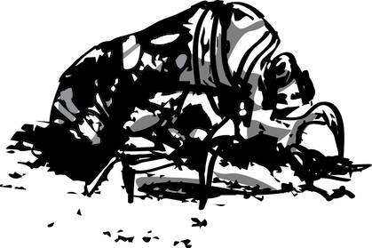

Lover's Requiem
by Ying Liang
could burrow in on myself,
collapse as an atrophied
lung would,
or crunch like the chitin-
stained shell of a decade-old cicada
 Maybe then I’d
learn how to love an epidemic.
Nirvana
 Masochist-at-heart,
Masochist-at-heart,there’s nothing left of me
save
an ache or two.
Organache. Mindache. Ribache.
sores on my psy-
che with cool balms
and patience,
for I
have yet to smell
the stench of
abortive
hope,
the soil crawl underneath my eyes and
repose in the sweet empti-
ness beneath.
on a star—I want to be beauty-full.
♥